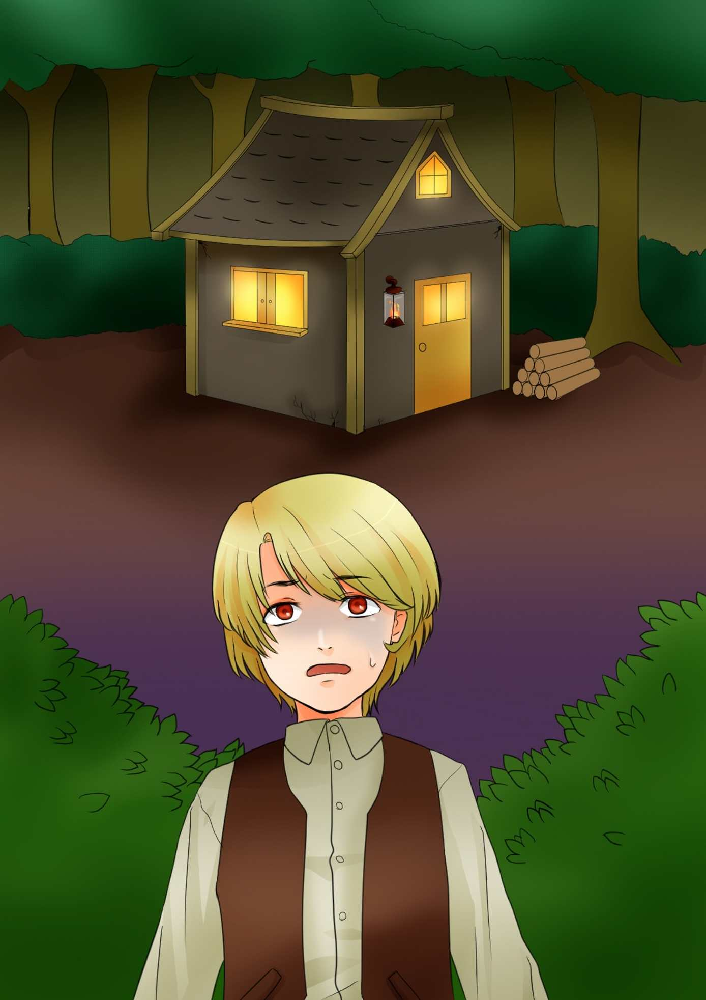
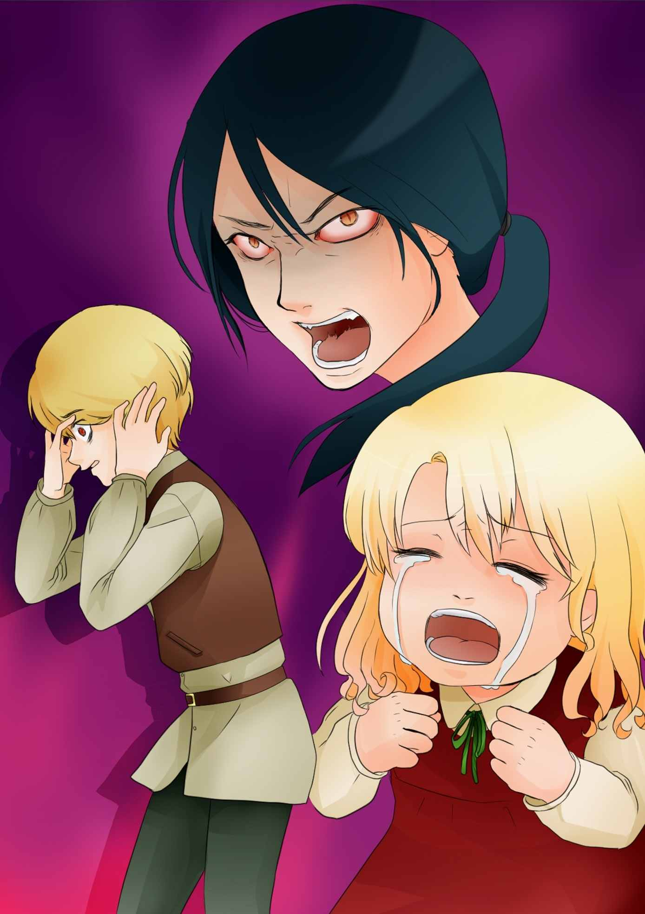
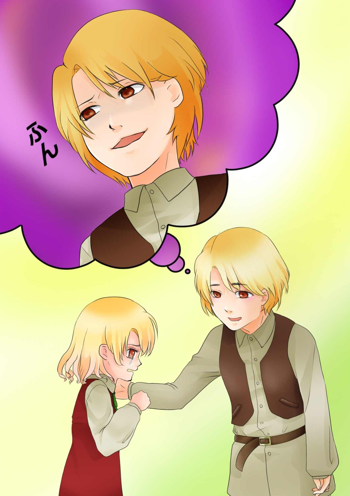
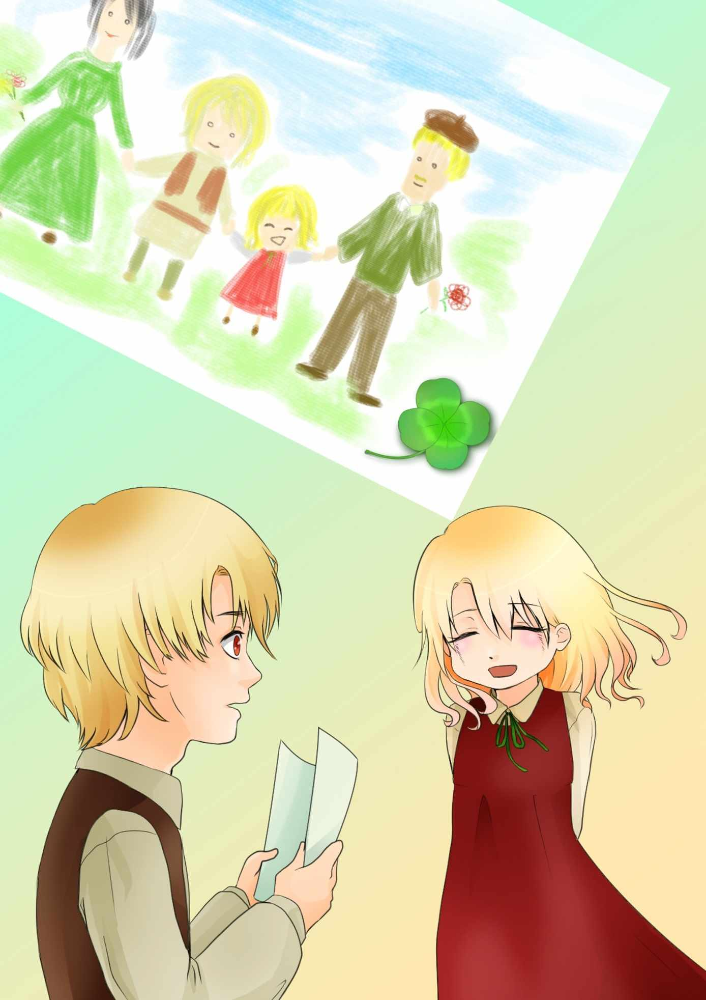

| あたたかな贈り物 (ネット文庫星の砂) | |
| 神在琉葵 | |
| nettobunnkohosinosuna (2019) | |
（これからどうしよう......）
道端の岩に腰掛け、ラルフは深い溜息を吐きました。
空の色は薄紫から青い色に変わり、そして、今はまた赤いものに変わろうとしています。
早く帰らなければいけないことはわかっていながら、ラルフはその場からなかなか動けないでいました。
疲れたせいではありません。
病気のお母さんに薬を買うためのお金を工面しに来たのですが、誰からも借りられなかったからです。
お母さんは、寝ていれば良くなると言いましたが、日を追うごとにお母さんの病状は悪化していきました。
お医者様に診てもらうことは無理でも、せめて薬を買ってあげたい。
その一心で、ラルフは朝早くから親戚や知り合いの家を訪ねましたが、どこに行っても、まるで野良犬のように邪険に追い返されるだけでした。
（こんな所で悩んでいても仕方がない。エイミーもお腹を空かせているだろうし、早く帰らなくちゃ......）
自分を奮い立たせるように心の中でそう言って、ラルフはどうにか立ち上がりました。
けれど、お母さんに対して、申し訳ない気持ちが膨らんで、ラルフの足はなかなか前に進みません。重い足をひきずるようにして、ラルフはとぼとぼと家に向かって歩きます。
そんな時、かぁかぁと騒がしい声で鳴きながら頭上を飛び去ったカラスを見て、ラルフはあることを思いつきました。
（本当にこっちで間違いないのかなぁ？）
ラルフが足を踏み入れた森は、見るからに不気味な所でした。
思わず引き返そうかと思った程でしたが、お母さんの薬代をなんとかするために、ラルフは精一杯の勇気を振り絞りました。
少し進んだだけで、鬱蒼と茂った森は真っ暗になりました。
ラルフはランプに火を灯し、不安と恐怖で押しつぶされそうになりながら、暗い森の中を進み続けました。
（あ、あれは、もしや......！）
ラルフはようやく森の中に一軒の小屋をみつけました。
そして、それがラルフの探していた魔女の家だと直感で感じました。こんな薄気味の悪い森の中に、まともな人間が住むはずがないのですから。
怖い想いをしながらもやっと魔女の家をみつけたというのに、ラルフは足がすくんでしまいました。
魔女は、普通の人間が絶対に売らないようなものを、高くで買ってくれるという話をラルフは思い出して、ここへ来たのです。お母さんを助けたい気持ちは強かったのですが、それでもやっぱり自分の何かを取られるというのは身体が震える程怖いことでした。
木の陰に隠れて、しばらく魔女の家をみつめていましたが、そんなことをしているうちにも、時間が経つばかりです。
家で待つお母さんや妹のことを考え、ラルフはついに決心して、魔女の家に向かって歩き出しました。

「ほぅ......薬代がほしいとな......」
家にいたのは、腰のまがった白髪の老婆でした。相当な年寄りだということはラルフにもわかりましたが、その眼光はとても鋭く、声もはっきりとしたものでした。
「はい、あなたは普通の人間が売ることのないものを高額で買って下さると聞きました。僕に売れるものがあったら、ぜひ、それを買っていただきたいのです。」
「おまえさん......わかっているのか？ 高額で買うには、それなりの理由があるということを......」
魔女はそう言うと、片方の口端を上げ、にやりと微笑みました。
それを見たラルフは恐怖で身が縮む想いでしたが、拳を握りしめ、恐ろしさをじっとこらえました。
「......はい。わかっています。」
声が震えないように気を付けながら、ラルフは気丈にそう答えました。
その言葉を聞いた魔女は、一瞬、驚いたような表情を浮かべましたが、それからすぐに、まるで気でも狂ったかのようなけたたましい声を上げて笑ったのです。
ラルフは、そんな魔女を呆然と眺めながら、魔女の笑いの発作がおさまるのを待ちました。
ラルフは、肩から下げたかばんに感じるずっしりとした重みがまだどこか信じられない想いでした。
ラルフの身体はどこも傷ついてはいませんし、体調が悪いということもありません。なのに、魔女はラルフが考えてもいなかった程の大金をくれたのです。
（あんな簡単なことで......）
少し前のことを、ラルフは思い返していました。
魔女は、ラルフにこう言ったのです。
「では、おまえさんの記憶をもらおうか......」
「記憶......？」
魔女の言葉は、すぐにはピンと来ませんでしたから、ラルフは小さく首を傾げました。
「そうじゃ、記憶じゃ。それも、おまえさんの楽しい記憶だけが欲しいんじゃ」
「本当にそんなものを買ってくれるんですか？」
何を取られるんだろうと内心ひやひやしていたラルフにとって、それはひどく簡単なことのように思えました。
「あぁ、そうじゃ。売ってくれるなら......ほれ......これをやろう。」
魔女は引き出しから大きな革袋を取り出し、ラルフの前に差し出しました。
中をのぞいてみると、入っているのは金貨ばかりです。今までこんな大金を見たことがなかったラルフは、たいそう驚き、そして二つ返事で魔女に記憶を売ることを承諾したのです。
「そうか、それなら話は決まった」
魔女は、しゃがれた声で呪文を唱えながら、ラルフの額をこつんこつんと数回叩きました。
たったそれだけのことで、ラルフは大金をもらい、帰されたのです。
暗い森を抜けた頃、あたりもいつの間にか森と同じくらい暗くなっていました。
ラルフは、家に戻る途中でお医者様の所を訪ね、往診を頼みました。
お医者様に診てもらったら、きっとお母さんも元気になってくれるはず......ですが、それがわかっていながら、今まではお金がなくてそうすることが出来なかったのです。ラルフが記憶を売ったおかげで、その望みは叶えられました。それはとても喜ばしいことでした。
ですが、不思議なことに、ラルフにはその実感が感じられなかったのです。本当ならとても嬉しいはずなのに、ラルフはそれほどの感情がわきあがらなかったのです。
「お母さん、良かったね！」
「ラルフ......本当に大丈夫なのかい？ お医者様なんかに来ていただいて......お金がかかるんじゃないのかい？」
「大丈夫だよ。工場長さんにお金を貸してもらえたんだ。返すのは、僕が働くようになってからで良いって。だから、お母さんはそんな心配することはないよ。」
ラルフは、お母さんに心配をかけないようにと、咄嗟に嘘を吐きました。
「そうなのかい？ それはとてもありがたいことだけど......なんだか申し訳ないね。元気になったら工場長さんにお礼を言いにいかなきゃね」
お母さんは、お医者様に診てもらったことで精神的にも安心したのか、とても気分が良さそうでした。小さなエイミーでさえ、お母さんのそんな変化に気づいたようで、お母さんの傍らで嬉しそうににこにこと微笑んでいます。
なのに、ラルフは、少しも嬉しくもないばかりか、なんとも言えない不愉快な気持ちを感じていたのです。
（そうじゃないだろう。お礼を言う相手は工場長じゃなくて僕のはずだ。僕が、あんな恐ろしい魔女の所へ行ったから、お金がもらえて、お医者様にも診てもらうことが出来たんだ。その前にも、僕は朝早くからいろんな知り合いの所に行って、何度も頭を下げて来たのに、お母さんはどうしてそんなことがわからないんだ！）
普段のラルフなら考えもしないどす黒い想いが、ラルフの心いっぱいに広がったのです。
その不思議な現象が、記憶を売ったせいだということは、ラルフにもわかっていました。
（楽しかったり嬉しかった記憶を全部売ったんだから、僕に残っているのはその逆の記憶ばかりだ。だから、僕は今もあんなことを考えてしまったんだ。）
お母さんの顔を見ると、子供の頃にきつく叱られたことや、お父さんが亡くなった時のことが思い出されました。
これからは、僕がお母さんとエイミーを守っていくと言った時、「あんたなんかにお父さんの代わりは出来ない！」と言われた時のお母さんの真っ赤な目が、ラルフの脳裏を過りました。
エイミーだってそうです。
気分屋のエイミーは、ラルフがなにかちょっとでも厳しいことを言うと、すぐに大きな声で泣くのです。
そんな時、お母さんはエイミーばかりを気遣って、ラルフは悪くもないのに叱られました。
「あんたは、エイミーよりずっとお兄ちゃんなんだから、優しくしてやらなきゃだめでしょう！」
ラルフはエイミーより10 歳も年上です。
ですが、ラルフだってまだ少年なのですから、それほどものわかりが良くなれるはずもありません。

「お兄ちゃん、お腹がすいたよ。早くごはんにして！」
エイミーは、無邪気な顔でラルフにそう言いました。
（僕は、朝からずっと出かけてて疲れてるし、お腹がすいてるのはこっちの方だ！）
イライラして怒鳴り散らかしたいような気分でしたが、なんとかそれを我慢して、ラルフは夕食の支度に取りかかりました。
その間にも、エイミーの甲高い笑い声が聞こえる度に、ラルフの気持ちはとても不愉快になるのでした。
（小さいからって、エイミーは何の手伝いもしない。僕ばかりがこき使われて、あいつはいつもお母さんにくっついて遊んでるばかりだ）
ラルフは今までに感じたことのない程の激しい憎しみを、妹に感じていました。
（はっ！ ......ぼ、僕は一体......）
ラルフは、自分の考えていたいやな想いが、魔女に良い記憶を売ってしまったせいだとすぐに気付きました。
なのに、気付いてもなかなかその想いは打ち消すことが出来なかったのです。
お医者様のおかげで、お母さんの体調は少しずつ良くなって来ました。そのことを喜ぶエイミーの明るい笑い声は、以前よりもなおさら良く聞かれるようになりました。
ですが、それとは裏腹に、ラルフの顔からは笑顔がすっかり消えていました。
（なんだよ、大変なことは僕にだけ押し付けて......気楽なもんだな！）
ラルフの心には、不平や不満ばかりが渦巻くようになっていました。
自分は元々家族の誰からも愛されてはいない。ただ、都合良くこき使うために必要とされているんだ......と、いつの間にかそんな風に考える程、ラルフの心はすさんでいました。
（もういやだ！ 僕はこんな所にはもういたくない！）
ラルフは、そろそろ遠くの町に働きに行きたいとお母さんに言いました。最初からそれは予定されてたことでしたが、その矢先にお母さんが倒れたために、行けなくなっていたのです。
「えっ......お兄ちゃん......もう行っちゃうの......？」
エイミーの大きな瞳に、今にも溢れそうな涙が浮かびました。
「そのことは前にも言ってあるだろう？ これからは、お母さんを手伝っておまえが家のことをちゃんとするんだぞ！」
「やだ！ お兄ちゃん......行っちゃやだ！」
エイミーは、ラルフの身体に抱き付いて泣き出しました。
（これからは甘えたことばかり言ってられないぞ！ 今まで僕がどれだけ大変だったか、身をもって知るが良い！）
ラルフはそんな意地の悪いことを考え、心の中でほくそ笑みました。

「エイミー、お兄ちゃんを困らせちゃいけないよ。お休みになったら、また帰って来てくれるんだから。......そうだ、いつか私たちもお兄ちゃんが働いてる町に遊びに行こう。だから......泣いちゃいけないよ」
お母さんは優しくエイミーを諭しました。そんな様子を見ながら、ラルフは小さく舌を打ちました。
（やっぱり、お母さんは少しも反対しない。どうせ、僕なんかいなくなったって、エイミーさえ傍にいたら、お母さんは寂しくもなんともないんだ。それよりも、これからは仕送りが入るから、きっと喜んでるんだろうな。）
「ラルフ......すまないけど、そこの棚の中にある箱を持って来ておくれ。」
ラルフは言われた通りに、お母さんのベッドの傍に箱を持って来ました。
「ラルフ、身体には十分気をつけるんだよ。向こうではちゃんとした寮に住まわせてもらえるらしいし、食事も用意してもらえるってことだから、ここにいるよりはきっと快適だとは思うけど......工場の皆さんに迷惑をかけないように、一生懸命真面目に働くんだよ。」
お母さんはラルフの両手を握りしめ、潤んだ瞳でラルフをじっとみつめました。
その時、ラルフの心は、なぜだか急にざわめき始めました。
胸がとても熱くなって来たのです。
「つまらないものだけど、これを持って行っておくれ」
「......これを？」
お母さんに差し出された箱を開けてみると、そこにはぴかぴかの革の靴と、暖かそうな毛糸のセーターが入っていました。
（......あ、これは......！！ ）
それを見ていたラルフは、そのセーターがお母さんのセーターと同じ色だということに気付きました。お母さんがたった一枚しか持っていない毛糸のセーターです。
「お母さん......このセーター、もしかして......」
「......ごめんよ。靴を買うのが精一杯で毛糸が少ししか買えなかったんだよ。だから......」
お母さんは申し訳なさそうな顔をして、そのままそっと俯きました。
その時、ラルフは気付いたのです。
お母さんは倒れる前、いつもよりも遅くまで働いていたことを......家に戻って来てからも、お母さんは部屋に閉じこもって何かをしていました。
夜中になってもお母さんは起きていて、ラルフが声をかけると、急ぎの仕立物があるんだと答えましたが、本当はこのセーターを編んでいたんだということを......。
（そうか......お母さんは、この靴を買うためにいつもより遅くまで働いて......そして、このセーターを編むためにあんな遅くまで夜なべして......）
ラルフの靴は、穴が開いてぼろぼろになっています。ですが、新しい靴のことなんて、ラルフは少しも考えてもいませんでした。
お金がないのですから、端から諦めていたのです。
（なのに、お母さんは......）
ぴかぴかの革靴が、ラルフにはゆらゆらと歪んで見えました。
ふと見ると、箱の底には紙が敷いてありました。
それを取り出してみると、そこには、女の人と男の人......そして少し小さな男の人とそれよりももっと小さな女の子が笑顔で並んでいる絵が描いてありました。
それが、お母さんと、今はもういないお父さん......そして、ラルフとエイミーの四人だということがラルフにはすぐにわかりました。
絵の片隅には、四葉のクローバーが張り付けてあります。
「エイミー......これ......」
「......一生懸命描いたよ！ これがあったら、お兄ちゃんも寂しくないでしょ？」
エイミーは涙をぬぐいながら、そう答えました。
ラルフはようやく気付いたのです。

自分が、お母さんやエイミーにとても愛されていることを......。
楽しい記憶を全部なくしても、ラルフはそのことをしっかりと感じました。
二人からの贈り物に込められた深い愛を、しっかりと受け止めたのです。
「お母さん......実はね......」
ラルフは、魔女に良い記憶を売ったことを、お母さんに正直に話しました。そして、このところ、お母さんやエイミーに対して抱いてた想いのことも。
お母さんは、そんなラルフを叱り、そして優しく抱き締めました。
お母さんが叱ったのは、悪い想いを抱いていたことではなく魔女の所へ行ったことです。ラルフには、自分の身を案じてくれているお母さんの気持ちが、とてもよくわかりました。
「なくなったものは取り戻すことは出来ないけど......新たに作ることなら出来るさ。これから、また良い記憶をみんなで作っていこう」
「いっぱいいっぱい作ろうね！」
「うん......ありがとう、お母さん......エイミー......」
三人は手を取り合い、みんなで顔を見合わせて深く頷き合いました。
◎ おしまい ◎